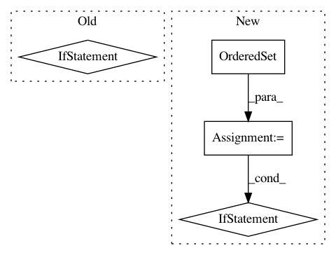

91cdde2ef79e87a9cb0d80cb55769bc23dc271cc,src/python/pants/backend/jvm/tasks/dependencies.py,Dependencies,console_output,#Dependencies#Any#,56
Before Change
if self.is_internal_only:
raise TaskError("Unsupported option for Python target: is_internal_only: %s" %
self.is_internal_only)
if self.is_external_only:
raise TaskError("Unsupported option for Python target: is_external_only: %s" %
self.is_external_only)
for line in self._python_dependencies_list(target):
yield line
def _dep_id(self, dep):
After Change
def console_output(self, unused_method_argument):
for target in self.context.target_roots:
ordered_closure = OrderedSet()
target.walk(ordered_closure.add)
for tgt in ordered_closure:
if not self.is_external_only:
yield tgt.address.spec
if not self.is_internal_only:
// TODO(John Sirois): We need an external payload abstraction at which point knowledge
// of jar and requirement payloads can go and this hairball will be untangled.
if isinstance(tgt.payload, PythonRequirementLibraryPayload):
for requirement in tgt.payload.requirements:
yield str(requirement.requirement)
elif isinstance(tgt.payload, JarLibraryPayload):
for jar in tgt.payload.jars:
data = dict(org=jar.org, name=jar.name, rev=jar.rev)
yield ("{org}:{name}:{rev}" if jar.rev else "{org}:{name}").format(**data)
In pattern: SUPERPATTERN
Frequency: 3
Non-data size: 4
Instances
Project Name: pantsbuild/pants
Commit Name: 91cdde2ef79e87a9cb0d80cb55769bc23dc271cc
Time: 2014-08-19
Author: john.sirois@gmail.com
File Name: src/python/pants/backend/jvm/tasks/dependencies.py
Class Name: Dependencies
Method Name: console_output
Project Name: pantsbuild/pants
Commit Name: 9a5a95e0f7bee96b38a2119198a4545ff65f83d1
Time: 2015-08-25
Author: john.sirois@gmail.com
File Name: src/python/pants/backend/python/thrift_builder.py
Class Name: PythonThriftBuilder
Method Name: run_thrifts
Project Name: pantsbuild/pants
Commit Name: 8c4190ca956a83f3286bc0d104041e94d53eaa59
Time: 2015-03-13
Author: nhoward@twopensource.com
File Name: src/python/pants/goal/context.py
Class Name: Context
Method Name: targets